こんにちは。明月です。
この投稿はVisual Studioをインストールする方法に関する説明です。
C#で開発するためには一応、開発ツール(IDE)をインストールしなければならないです。C#の開発ツールはJavaみたいに様々があることではなく、Visual studioで決まっています。
もちろん、メモ帳で作成してビルドファイルを利用して開発することもできますが、Visual studioが値段が高いプログラムでもないし、無料ツールなのでただダウンロードして使ったらよいです。(会社で商業的に開発することはライセンス値段が必要です。)
Visual studioはパソコンの高いスペックが必要です。なので、開発準備する前にパソコンのスペックをアップグレードしましょう。
Visual studioをダウンロードしてインストールしましょう。
link - https://visualstudio.microsoft.com/ja/vs/

Visual studioのバージョンでProfessionalとEnterpriseがあります。そのバージョンは無料ではないので、我々はCommunityバージョンを使いましょう。
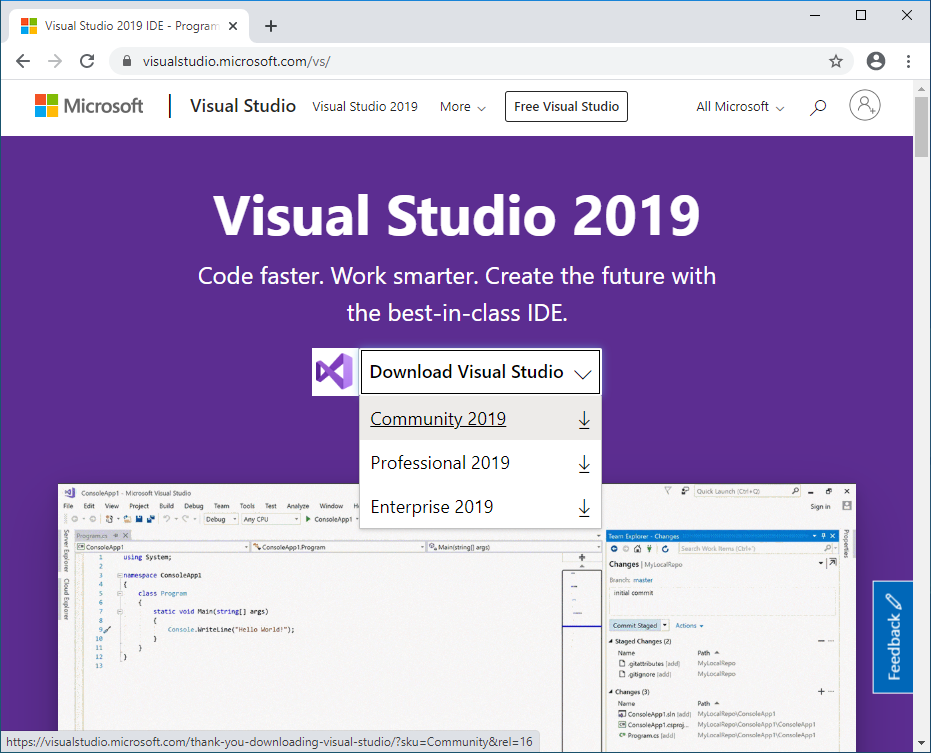
その後でインストールファイルをクリックして実行すればインストールに必要なファイルを先にインストールするということにメッセージが表示されます。
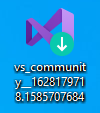
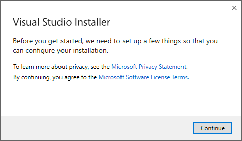
そのままにインストールしましょう。
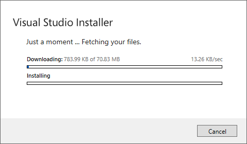
インストールが終わったらインストールオプションメニューが表示されます。

我々は一応、たくさんの機能が必要ないのでASP.NETとPython、.Net Desktop、C++だけ選択してインストールしましょう。インストールした後には必要なコンポーネントがあれば追加インストールができるので、始めは必ず必要なことだけインストールしましょう。(時間がたくさんかかります。)

インストールが完了するとログインするメニューが表示されます。MicrosoftのIDを入れてログインすればよいです。(もし、IDがなければ会員登録しましょう。登録で別に料金がかかることではありません。ログインしないとCommunityバージョンでも30日しか使えません。)
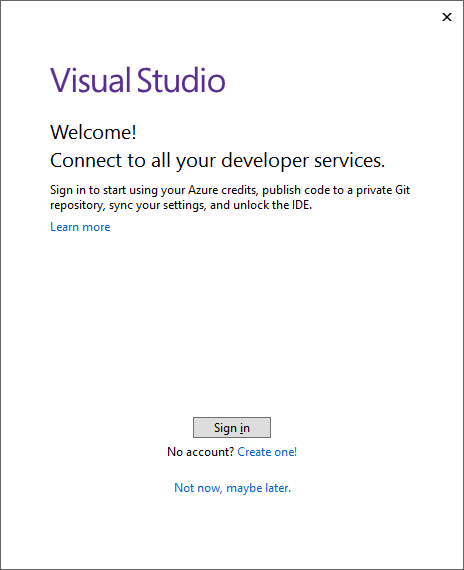
ログインしたらプロジェクト選択画面が表示されます。一応、しっかりインストールされたかを確認するためにCreate new projectを選択しましょう。
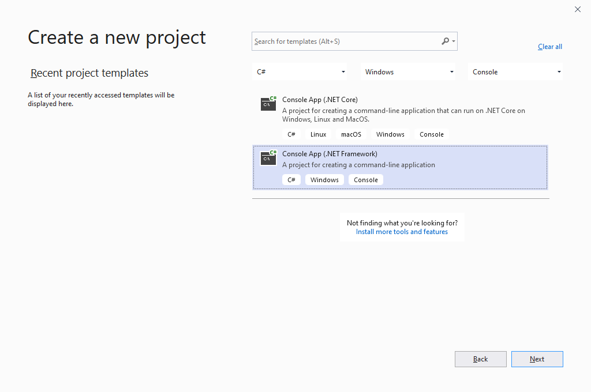
そしてC#コンソールプロジェクトを選択しましょう。ここでCoreバージョンではなく、.Net Frameworkを選択しましょう。
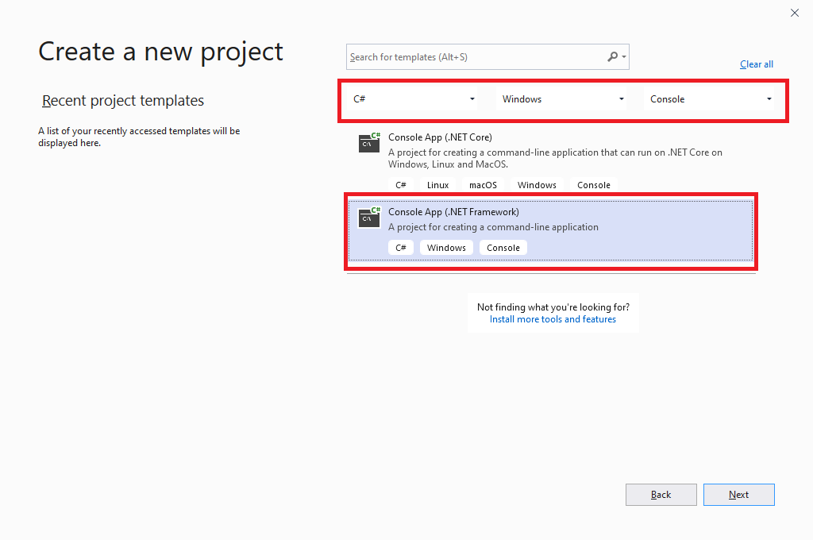
そしてプロジェクト名を入れましょう。
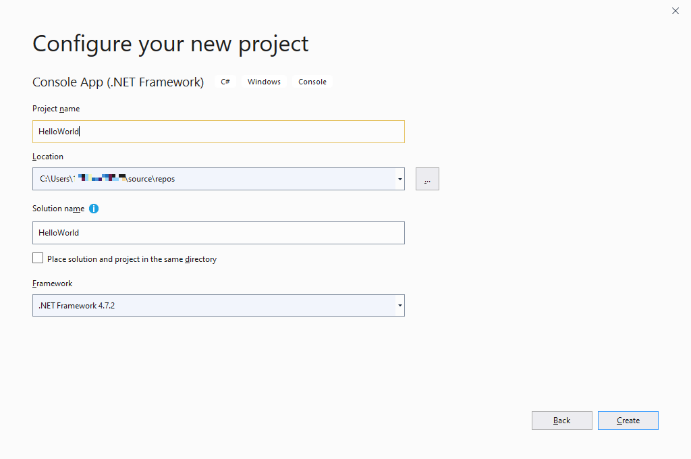
そしてプログラムが実行されたらメニューでToolのOptionを選択しましょう。
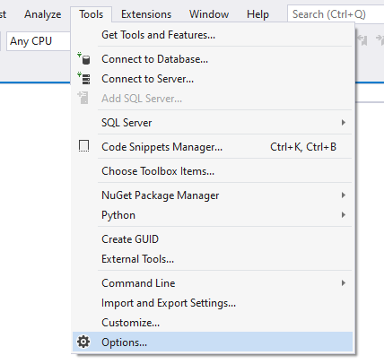
そしてテーマをDarkに選択した方が良いです。Lightがよいと思う方はそのままに使ってもよいですが、開発者は一日ずっとPCを見る人なのでできれば目の疲労を少なくするほうが良いです。
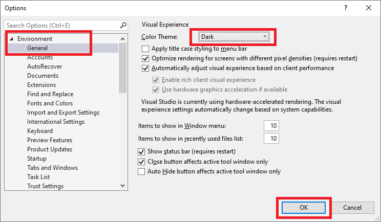
そしてソースウィンドウでテストソースを作成しましょう。
using System;
using System.Collections.Generic;
using System.Linq;
using System.Text;
namespace Example
{
class Program
{
// 実行関数
static void Main(string[] args)
{
// コンソールに出力
Console.WriteLine("Hello world");
// 任意のキーを押してください
Console.WriteLine("Press Any Key...");
Console.ReadKey();
}
}
}
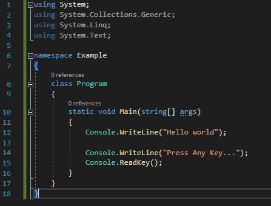
そしてF5キーを押下してビルドとコンパイルをしましょう。
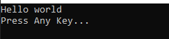
上のコンソールウィンドウが表示されるとC#のための開発する準備は完了しました。
ここまでVisual Studioをインストールする方法に関する説明でした。
ご不明なところや間違いところがあればコメントしてください。
- [C#] 15. インタフェース(interface)2019/07/10 00:06:17
- [C#] 14. 抽象クラス(abstract)と抽象メソッド(abstract)、そして仮想関数(virtual)2019/07/08 23:04:09
- [C#] 13. クラスの継承と再定義(override)する方法、overrideとnewの差異2019/07/08 22:55:00
- [C#] 12. Staticとアクセス修飾子、そしてカプセル化2019/07/07 23:12:30
- [C#] 11. インスタンスう生成(new)とメモリ割り当て(StackメモリとHeapメモリ)そしてヌル(null)2019/07/07 22:54:13
- [C#] 10. クラスを作成する方法(コンストラクタ、デストラクタ)2019/07/06 00:53:17
- [C#] 9. 関数(Method)とオーバーロード、再帰呼び出し2019/07/06 00:38:29
- [C#] 8. 配列とリスト2019/07/05 00:12:42
- [C#] 7. 制御文2019/07/05 00:05:30
- [C#] 6. 演算子2019/07/04 00:09:43
- [C#] 5. データタイプ変換(キャスト:Cast)とコメント(Comment)2019/07/04 00:01:12
- [C#] 4. データタイプとリテラル(literal)、 Nullable2019/07/02 23:58:43
- [C#] 3. プログラミングの始めと変数と定数を使う方法2019/07/02 23:46:49
- [C#] 2. Visual Studioをインストールする方法2019/07/01 23:58:20
- [C#] 1. C#とは？2019/07/01 23:32:22
- [C#] 46. データベース(MSSQL)に接続する方法2021/10/07 18:39:58
- [C#] 45. ネットワークソケット通信(Socket)を使い方2021/10/06 19:06:25
- [C#] 44. ファイル(FileInfo)とディレクトリ(DirectoryInfo)を扱い2021/10/05 19:29:34
- [C#] 43. ストリーム(Stream)とバイナリ(byte[])、エンコード(Encoding)、そしてusingを使い方とIDisposableインターフェース2021/10/04 18:33:04
- [C#] 42. ファイルを扱い(IO)とファイルメタデータ(FileInfo)を使い方2021/10/01 20:10:21
- [C#] 41. Taskクラスとasync、awaitを使い方2021/10/01 18:59:14
- [Javascript ] WebのFull calendar(スケジュールカレンダー)の使い方法2021/07/15 21:35:36
- [Java] 56. Web serviceのサーブレット(Servlet)で初期化作業(properties設定)2021/07/02 17:10:36
- [Java] 55. Spring frameworkに文字化けを解決する方法(Encoding設定)2021/06/30 16:37:16
- [Java] 54. Spring frameworkでWeb filterを使う方法2021/06/29 18:25:12
- [Java] 53. ウェブサービス(Web service)でエラーページを処理する方法2021/06/25 13:35:54
- [Design pattern] 1-3. ファクトリメソッドパターン(Factory method pattern)2021/06/23 19:45:37
- [Java] WebSocketでチャット履歴をローディングする方法2021/06/15 18:34:45
- [Java] WebSocketを利用してユーザ(サイト運用者)が他のユーザとチャットする方法2021/06/15 17:20:08
- [Design pattern] 1-2. ビルダーパターン(Builder pattern)2021/06/11 19:06:28